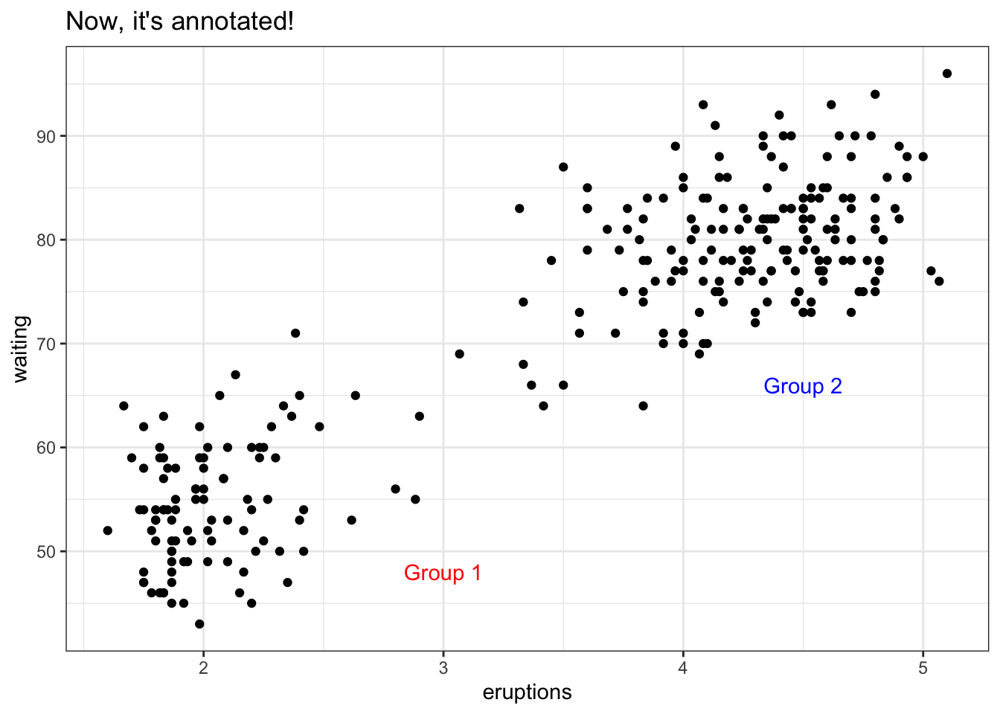

library(tidyverse)Best Practice
Best Practices
How To:
Below, we will discuss some very useful habits to get into when programming in R. ### Seeding Consider that you want to generate some random values from a statistical distribution (any distribution). The goal is to use this randomly generated values for an experiment. For this example, we will generate 15 values from the Poisson distribution with \(\lambda = 9\). Run the code below and keep your eyes on the values you get.
rpois(15, 9)Rerun the code above and you will see that the values generated changes. Wow, the values are not the same. Why? You are right, because the values are randomly generated. There is no guarantee they will be the same each time you run the code, but we need the same values to continue the experiment. We do not want to start all over again. What shall we do…..?
Seeding is the right answer. Setting a random seed (also known as seeding) makes sure you can reproduce the same values even after a long time or a different computer. Run the example below, which sets a seed of 250.
set.seed(250)
rpois(15, 9)Re-run the lines above again and you will still get the output below.
[1] 7 11 6 12 11 15 12 6 9 12 8 8 8 6 9
Commenting
No, we are not talking about commenting on a social media post.
What are we talking about then? Well, imagine you are working on a project with a partner and you have to share your R script or Markdown file with them. Now, how exactly will your partner know what each variable represents? Yes yes, you can call them and inform them that this and that variable represents so and so thing. Touche!!! What about if you have a million variables? A good practice is to include a description of your code. That is, you might want to give a description of the important (if not all) variables in the R file that you will share with them. How do you do that? Run this block of code.
# From the data I received, I realized that the variable names do not give any idea of what
# they represent. So I called the clients and have them give the description of the variables.
# Age: a numerical variable collected in ranges (e.g 10 - 20, 21 - 30, ...)
# Sex: a categorical variable whose values are either 1,2, or 3 ( 1 for male, 2 for female and 3 for others)
# Preference1: a categorical variable which represents food preference
# Preference2: a categorical variable which represents car color preferenceDo you notice anything about the block of code above? Strange….
We run it and nothing happens. The computer must be broken. Wait, don’t cry, your computer is fine. Something did happen. By putting the # sign at the beginning of each line, we are telling R to ignore everything that comes afterwards on that line and not execute it. This is what we call commenting.
It is very useful for adding descriptions to lines in your code or just telling R not to perform the task on a particular line. We can put the # at any place inside our codes. We only have to note that R will ignore everything that comes after the # sign on the line we put it. Let us demonstrate that with some more examples. Run the code below to see how it behaves.
# 2 + 10
print("The operation was ignored because it is has been commented")
my_name = "John Doe" #this variable stores my name
CWA = c(98.7, 58.9, 90) # CWA stands for cumulative weighted average (think of it as CGPA on a scale of 100)Annotation
Let’s say you make a plot and you want to add a text on the plot, that is annotation. To do this, use .
First, we make a plot and store it in the variable .
p <-ggplot(faithful, aes(x = eruptions, y = waiting)) +
geom_point() +
theme_bw() +
labs(title = "My Unannotated Plot")Now lets run the code below to add annotation
p +
annotate("text", x = 3, y = 48, label = "Group 1", color = "red") +
annotate("text", x = 4.5, y = 66, label = "Group 2", color = "blue") +
labs(title = "Now, it's annotated!")
Markdown
R Markdown is like a notebook in R, where you can write your Reports containing your plots and summary. It is very easy to use as well.
To use R Markdown, follow the steps below.
Open your RStudio.
Click Files (the top left corner of your screen).
A dropbox should appear, click on New File.
Another dropbox should appear, click on R Markdown.
Type in your title, and select the output file type you want (the default is html).
To run some code, you need to type it into a “code chunk”.
Click on any empty line in your R Markdown working space.
Create your chunk by typing ```{r}. Then write some code!
Close your chunk by typing ```.
Professional Output
See the Google Doc for the draft they wrote.
You Try!
Make a nice table counting the number of each species on each island.
Why/how/when do we set a seed for an algorithm?
List three ways to clean up your output.
What is the difference between a script and a notebook?